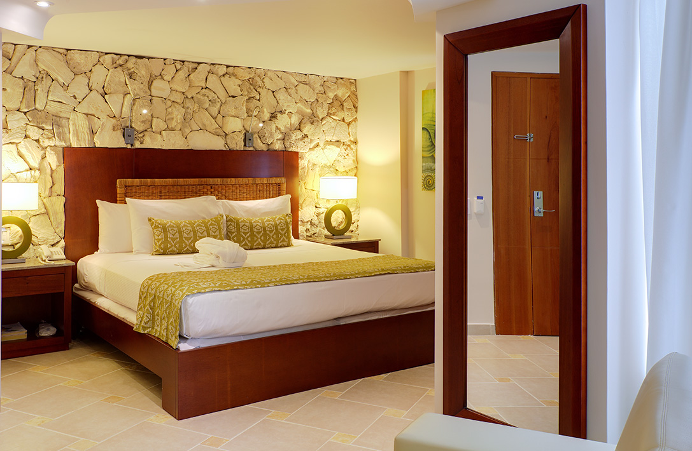
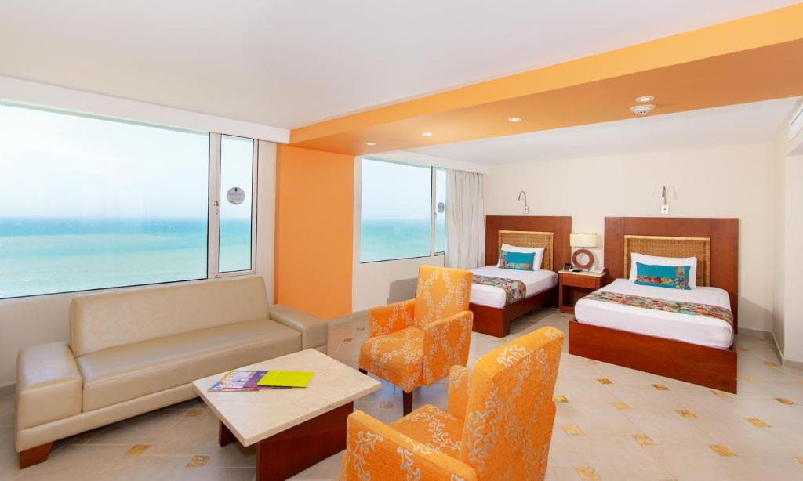
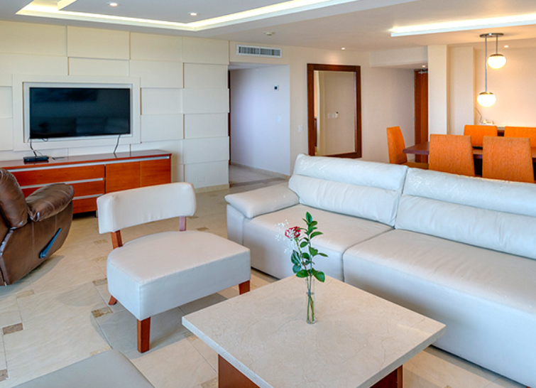

NUESTRAS HABITACIONES
| NOMBRE | IMAGEN | DESCRIPCION | PRECIO |
|---|---|---|---|
|
STANDAR KING Y VISTA AL MAR |
 |
Cómoda habitación de 20 m², para máximo 2 huéspedes. La habitación dispone de aire acondicionado, Tv, cajilla de seguridad, conexión Wi-fi y, además, una increíble vista a la ciudad. |
300.000 por noche |
|
SUPERIOR TWIN Y VISTA AL MAR |
 |
Amplio espacio diseñado para máximo 4 huéspedes. Esta habitación de 44 m² con vista al mar, promete ser la ideal para un descanso en la ciudad de Cartagena. Dispone de dos camas Twins, un sofá cama, aire acondicionado, TV y conexión Wi-fi. |
500.000 por noche |
|
SUITE CON BALCÓN Y VISTA AL MAR |
 |
Nuestra habitación Suite está diseñada para brindarle exclusividad, seguridad y confort. En un amplio espacio de 110 m² que dispone de dos habitaciones, dos baños, dos escritorios, un balcón con una increíble vista al mar, equipada con una cama King y dos camas sencillas. Es para máximo 5 huéspedes y dispone de conexión Wi-Fi. |
1'000.000 por noche |